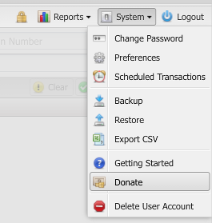

If you find this software useful, I would greatly appreciate a donation. I write and maintain Buddi Live in my spare time, and any support really helps. In addition, hosting the Buddi Live service incurs real monthly costs to me. Donations can help to offset these costs, and will help ensure that I am able to support Buddi Live in the future.
To show my appreciation, those who donate any amount will unlock premium features on their account. Currently these features include:
Donating is easy. After logging in, simply go to the System menu and click 'Donate'.

A new window will open to the Paypal donation site. Paypal allows you to submit a donation via a credit card, or an existing Paypal account if you already have one.